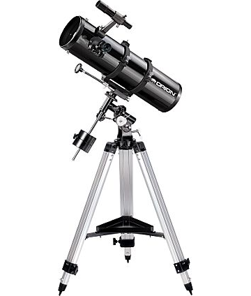
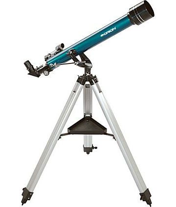
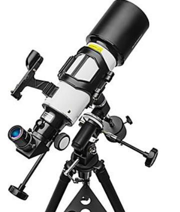

|  | Orion SpaceProbe 130STThis 5.1" aperture reflector telescope gathers an ample amount of light for great views of the planets and Moon, as well as brighter galaxies, nebulas, and star clusters. Short 24" long optical tube design for easy portability and fast f/5 focal ratio for pleasing wide-field performance makes the SpaceProbe 130ST EQ a very versatile telescope the whole family can enjoy. Price: 300$ |
|  | Orion Observer 60mm AltazimuthThis is a great telescope for kids interested in astronomy and space. The Orion Observer 60mm Altazimuth Refractor is a wonderful starter telescope well-equipped for visual adventures under starry skies. The Observer 60mm is a full-fledged refractor telescope complete with everything you need to start enjoying the night sky. This telescope will make a great gift for any child interested in exploring starry skies!Price: 60$ |
|  | Orion CT80 EQ 80mm Compact Equatorial Refractor TelescopeThe versatile Orion CT80 EQ combines a wide-field refractor telescope with a stable equatorial (EQ) mount and adjustable tripod. The telescope's 80mm (3.15") aperture, f/5 objective lens is larger than lenses found in most typical starter scopes, which means you'll enjoy brighter views of everything you see. The CT80 optics are fully coated with anti-reflection coatings for clear, sharply defined views. Internal knife-edge baffles help optimize contrast by preventing off-axis reflections. The CT80 EQ Compact Refractor will amaze the whole family with wide-field views of the Moon, planets, and even bright nebulas and star clusters.Price: 200$ |